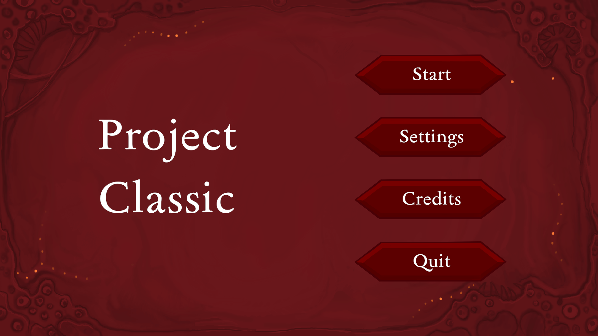
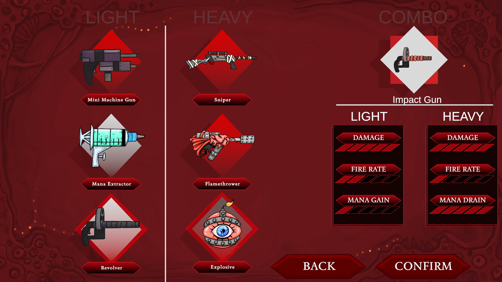
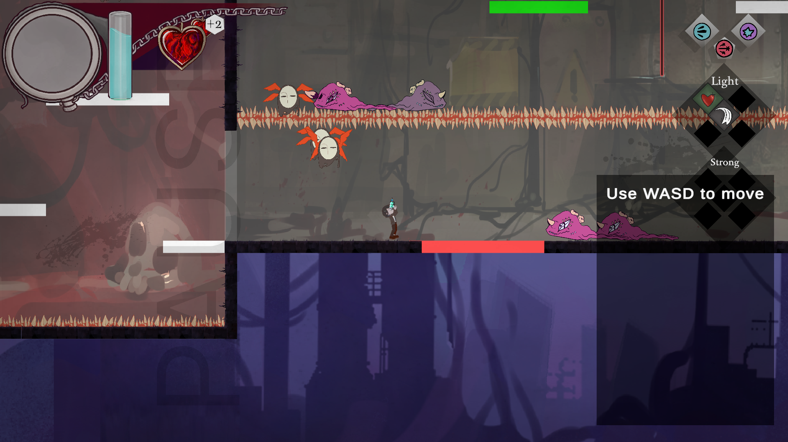
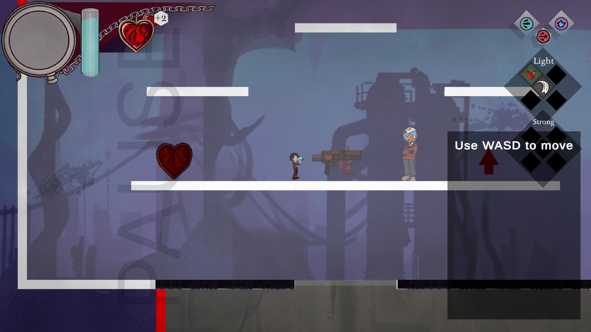
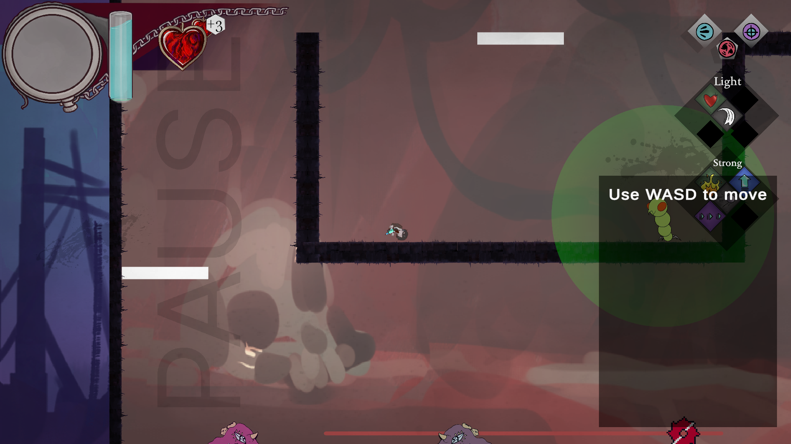
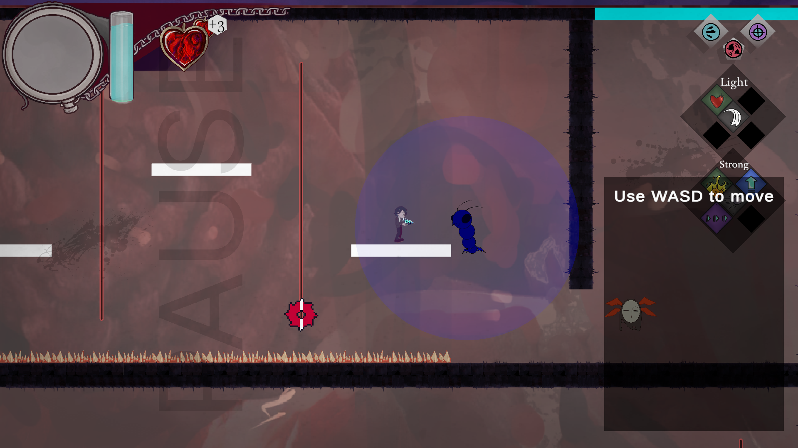
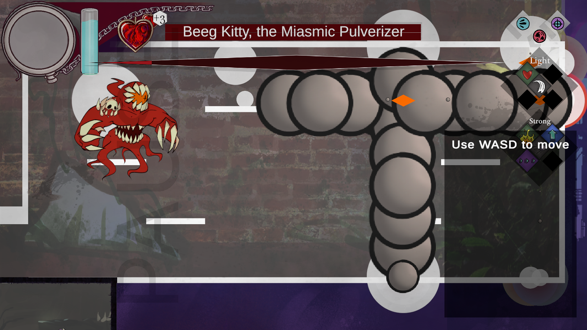
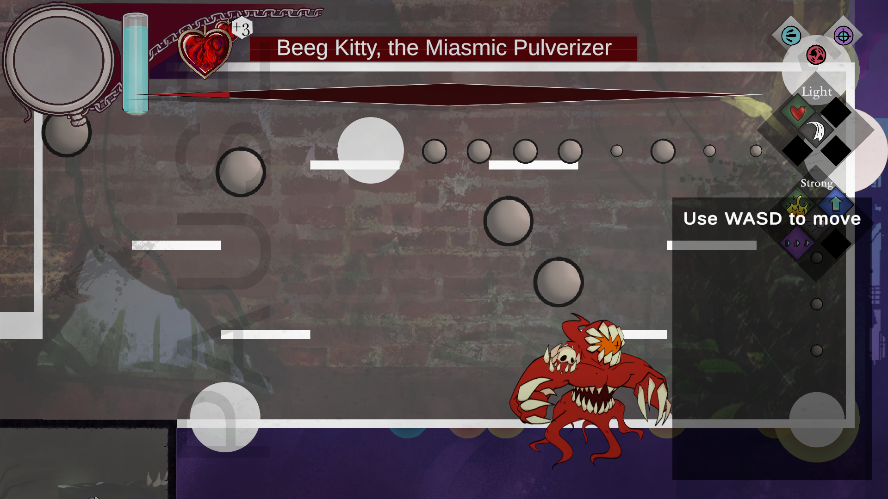
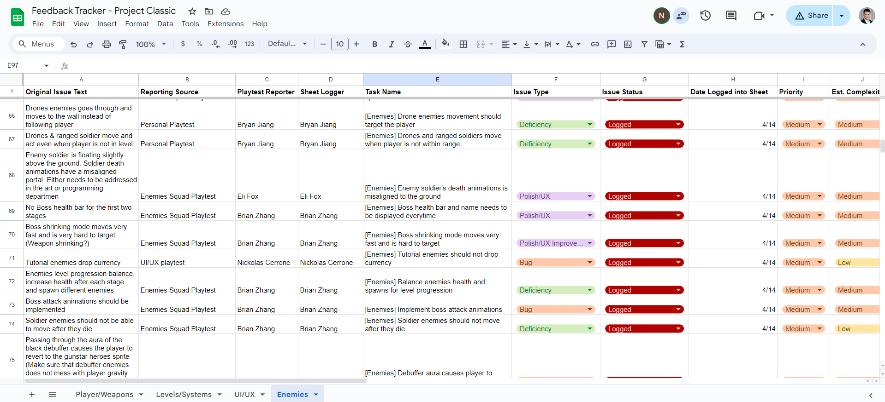
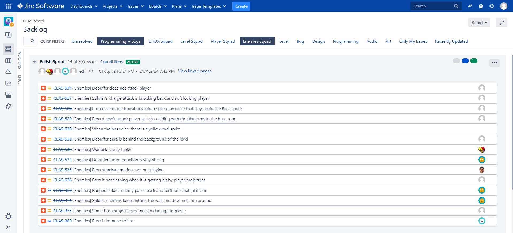

Leads Meeting
In the lead meeting, the directors provided updates on the status of their departments with the approach of the two-week deadline before the game showcase.
The emphasis was on incorporating the final assets and achieving as much balance as possible within the game. Unfinished art assets were noted as a priority to
be completed and added into the game. A significant technical focus was on refining the infinite level or system to ensure it operates smoothly without causing
any game softlocks. Addressing the enemies' behavior was identified as another critical task, with the goal of ironing out any unintended interactions with the
player to ensure balanced gameplay. Furthermore, the team deliberated on the deployment process to Steam, considering assigning a dedicated group of programmers
to conduct final polish and balance adjustments. This is to ensure the game is as refined as possible for its public release on the platform.
Studio-wide Meeting
At the studio-wide meeting, the team discussed the upcoming milestones for the end of the development cycle of their game. Deadlines were set for submitting
Post-Mortem Forms by April 14th and Leadership Applications by the extended deadline of April 21st, which is also the end of development. The game's Launch and Showcase,
as well as the opening of Summer 2024 Interest Forms, are scheduled for April 22nd. The final studio meeting, a Project Post-Mortem, is on April 28th, and the code
repository will be locked on April 21st, preventing any further contributions. The Art and Audio teams are focusing on asset creation and implementation, filling
any gaps in the art. The Design team is tasked with in-engine polish and balancing, including identifying any significant needs for adjustments. Programmers are working
on bug fixes and integrating these assets, along with additional UI/UX implementations needed. The process involved squad meetings to playtest the build, where everyone
was expected to participate and note issues on the feedback tracker. The Producer would document these observations. The main objectives were to search for bugs, propose
design changes, and highlight anything missing. Prioritization was crucial, along with determining the reproducibility of bugs. In subsequent production meetings, the
team reviewed all noted bugs for clarity and to eliminate duplicates.
Playtesting Project Classic Prototype
The game unfolds with a rich, darkly themed aesthetic from the main menu, featuring choices such as Start, Settings, Credits, and Quit, presented in a foreboding style with
deep red hues and a mysteriously swirling background. The title’s design sets the tone for a potentially ominous and immersive experience. Moving to the weapon selection interface,
the game offers a strategic layer with a variety of weaponry including 'Light' and 'Heavy' categories, alongside a unique 'Combo' option. Each weapon, from the "Mini Machine Gun" to the
"Flamethrower," showcases distinctive art and suggests varied gameplay styles, with stats that influence damage output and rate of fire. In-game action portrays a side-scrolling platformer
where the character navigates through levels with platforming elements and engages in combat with different enemies. Indicators for health and mana point to a gameplay balance between resource
management and action, and there is an element of ability usage hinted at by icons for 'Light' and 'Strong' attacks. Challenges such as a boss named "Beeg Kitty, the Miasmic Pulverizer" suggest
epic battles with unique adversaries. This particular encounter seems to be a significant test of player skill within a dedicated arena setting, typical of boss fights that emphasize strategy and
skill. Environmental hazards like spikes and treacherous gaps are visible, emphasizing the need for careful navigation. The presence of a pause feature indicates real-time action gameplay that can be
suspended, likely for strategic planning or a break in the action. However, assessing aspects like control responsiveness, game fluidity, and overall balance would require hands-on interaction with the game itself.








Update Feedback Tracker
A playtest of the prototype game build revealed numerous bugs: melee soldiers harm the player during their death animations; a specific game seed is broken; art updates caused some soldiers to not
attack and sink into the ground; soldier sprites incorrectly flip due to scaling issues. Boss battles lack necessary UI elements like health bars, and defeated bosses leave lingering attacks.
Soldier movements are too slow, and one boss attack freezes the game. Boss behavior does not match the design documentation. Other issues include a boss that can leave the room, visibility
problems with debuffer auras, incorrect soldier charging triggers, static ranged soldiers, enemy collider discrepancies, drones that don't track the player properly, floating soldiers, missing boss
health bars, overly fast boss shrinking modes, erroneous enemy drops, and balance issues. Moreover, certain attacks inconsistently affect the player, and there are various issues with debuffers,
including an insta-kill bug and invisibility of platforms. These bugs compromise gameplay and require fixes for a polished final product.

Logging and Updating Tasks on Jira
In the concluding two-week phase known as the "Polish Sprint," teams dedicate themselves to perfecting the product by systematically addressing the backlog of current bugs. This phase is critical for
achieving a seamless and engaging user experience. The process begins with the prioritization of bugs, where the team evaluates and ranks issues based on their impact on gameplay and the overall user
experience, focusing first on the most significant problems. Developers then embark on a meticulous resolution process, tackling the prioritized bugs by identifying their root causes, making the necessary
code adjustments, and ensuring that their fixes do not adversely affect other product areas. Each resolved bug is subjected to rigorous testing, incorporating both automated tests and hands-on trials by the
quality assurance team, to confirm that the issue is truly resolved. In instances where a fix leads to new bugs or fails to completely address the problem, the team reassesses and, if needed, reassigns a
higher priority to the issue in the backlog. The cycle culminates with a comprehensive final verification, ensuring that all bugs have been remedied without introducing any new ones, and affirming that the
game presents a polished and well-balanced experience.
